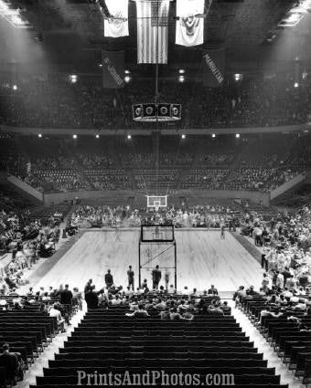
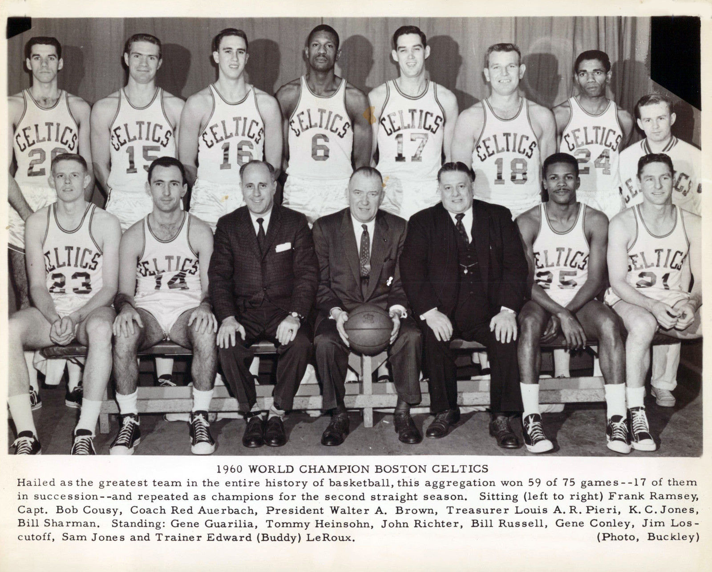
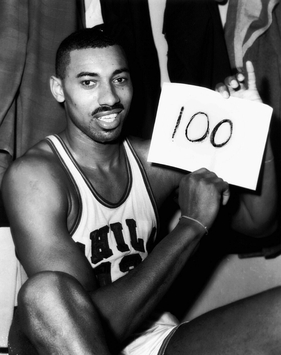
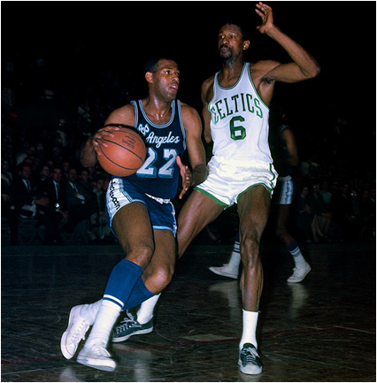

Images of Early Professional Basketball

The 1950 Minneapolis Lakers won the inagural NBA Championship after the merger.

Madison Square Garden in New York, taken in 1951.

The Boston Celtics are pictured here after winning their ninth championship in ten seasons.

Wilt Chamberlain scored a NBA regular season record 100 points in a game on March 2, 1962.

Elgin Baylor scored a NBA finals record of 61 points on April 14, 1962.
Jerry West drives baseline in a picture that would become the NBA logo in 1969.